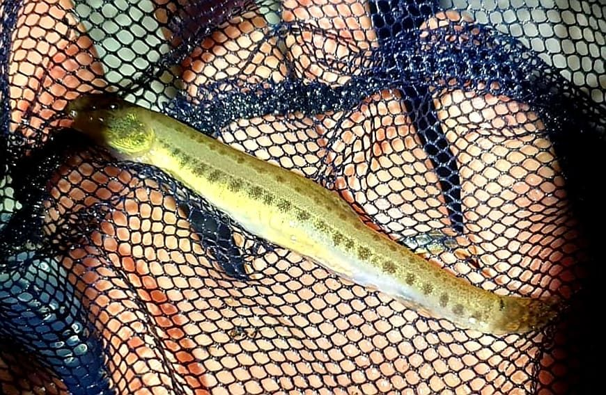
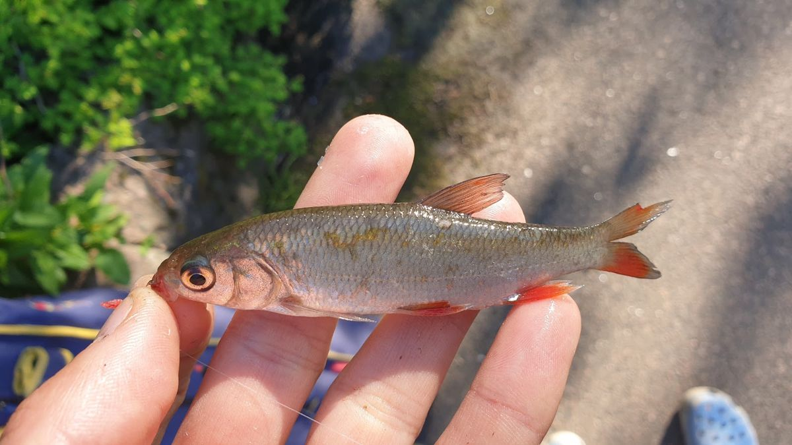
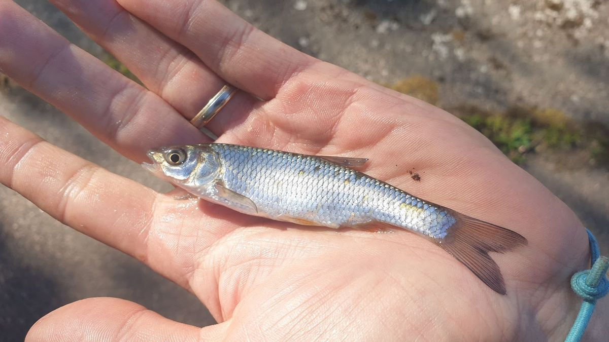
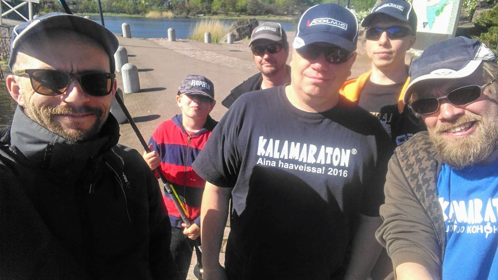
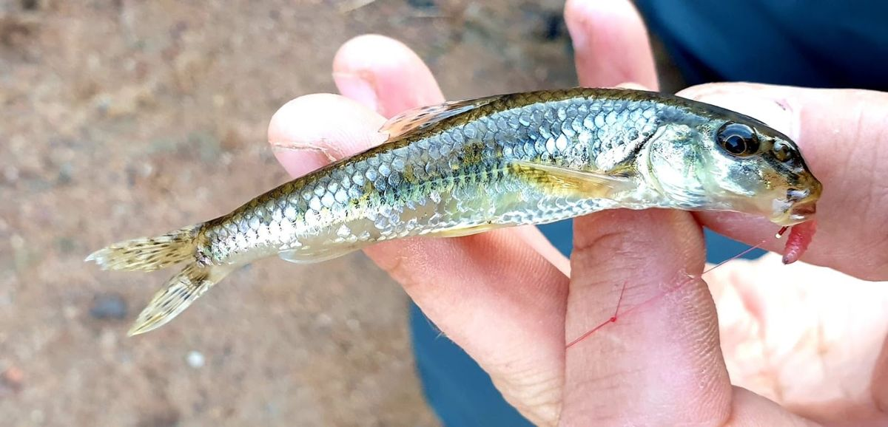
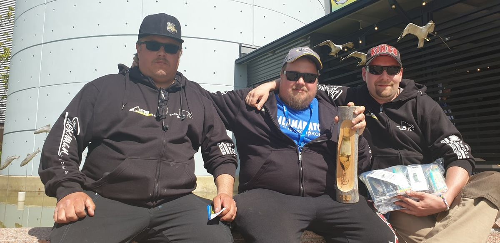
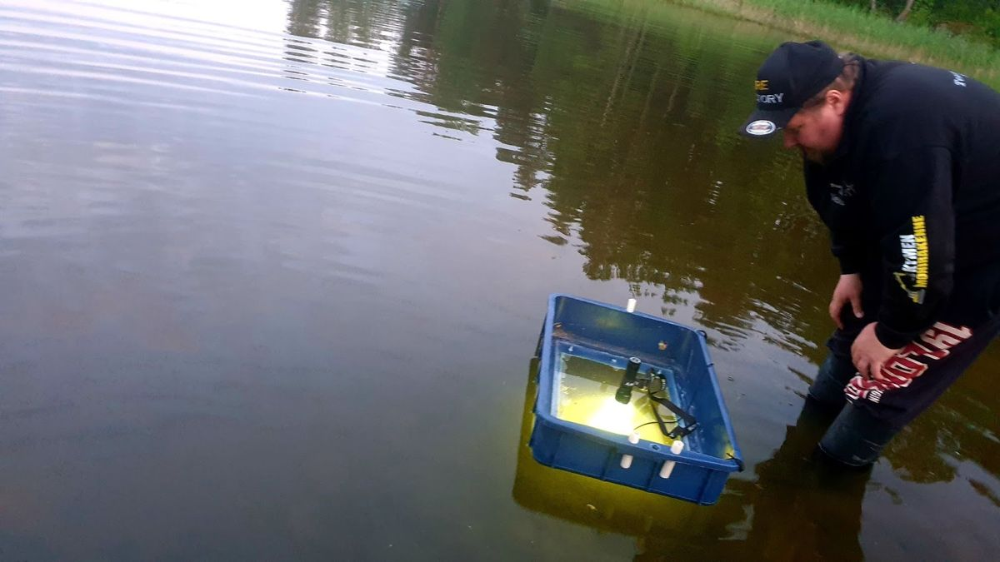
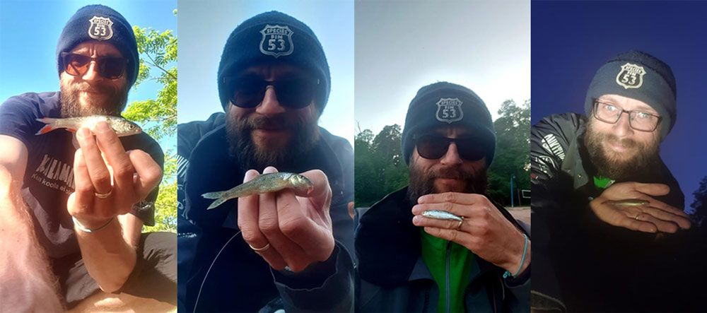
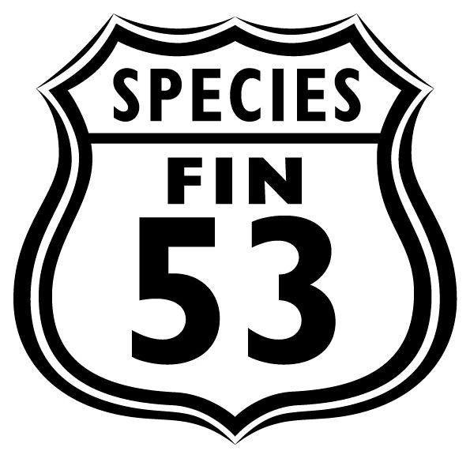

Blogitekstit · Kesäkuu 2020
Kotkan kalavesillä - 100% onnistuminen


Kalastus on siinä mielessä yleisöystävällinen laji, että sen ääreen on helppo pysähtyä juttelemaan.
Aloitin kalareissuni tutuksi tulleesta Sapokan kanavasta ja sen rannoilta. Näillä rannoilla on istuttu ja ihmetelty maailman menoa Kotkan Kalamaratonissa, on napattu nopeasti kymmenen kalalajia ja koettu karvaita karkuutuksia, unohtamatta niitä upeita onnistumisia ja kohtaamisia.
Sapokan kanava on Kotkan vastine Helsingistä löytyvälle Vanhankaupunginkosken suvannolle ja erityisesti Pornaisten puolen muurille. Muurilla kohdataan kalastajia Kalamaratonin tiimellyksessä ja oman tiiminsä lajimäärästä.
Tämäkään kalareissu ei tuonut poikkeusta, nyt Kalamaraton oli vain edessä siitävä haave ja upeat muistokuvat menneiltä vuosilta. Keskusteluseuraa tarjosivat ohikulkijat.
Erityisesti mieleen jäi pariskunta joiden mukana oli pieni kukkamekkoon sonnustautunut prinsessa.


Juttelin pariskunnan kanssa ja näytin tytölle mitä lajeja nousee, samalla kerroin heille mitä etsin ja miksi. Sain tällä pienellä hetkellä yhden lukijan blogilleni, josta myös heille mainitsin.
Vain hetki tämän kohtaamisen jälkeen käsissäni oli pieni suomuinen säyne. Ensimmäinen neljästä tälle reissuille tavoitteeksi asettamasta lajista oli ylhäällä.


Jatkoin muurilta onkimista, mutta seipiä ei näkynyt. Muita lajeja kyllä nousi; salakka, ahven, pasuri, lahna, turpa, sorva, kolmipiikki ja kymmenpiikki
Uimaranta hiljeni, lapsiperheet olivat poistuneet ja kaukaa kuului epämääräisen miesjoukon kovaääninen soidintanssi. Maskuliininen testosteronin tuoksu leijaili koko nurmikentällä, muutama vastakkaisen sukupuolen edustaja keinui leikkipaikalla, ja he kuuluivat selvästi samaan seurueeseen.
Pukeuduin koko vartalokortsuun, Happyangler.fi -verkkokaupasta saamiini Norfinin kahluuhousuihin sekä kisatiimimme kisatakkiin.
Hiljainen ranta odotti minua.
Upea näky ja onnistumiset


Hän oli tosi upee näky, lyhyessä kesämekossaan. Hänet rannassa näin, kun kävelin rantaa päin, hän riisui vaatteitaan…
Hieman mukaillein Popedan laulun Kuuma kesä sanoja. Mahdoin olla näky minäkin, vapa tanassa kumihousut jalassa, rinnassa roikkuu kuin räkä kastunut käsipyyhe ja sakset, siimaleikkuri ja suonipihdit säestävät kävelyäni tasaisella kilkatuksella.
Katseeni harhaili pläkän lahdelman pinnalla päätyen välillä tämän upean naisen pakaroille, joita mustat ohuet stringit vielä entisestään korostivat. Vieressä toinen seurueen jäsen oli riisunut lenkkivaatteensa ja hänellä oli alla sporttinen uima-asu.
Kävelin seurueen ohitse ja aloitin ruovikon keskeltä löytyvästä aukosta kalastamisen. Kävin ruovikon reunaa läpi seuraten samalla katseella uiskentelevia pieniä kalaparvia. Mutuja, kolmi- ja kymmenpiikkejä, muutama särki. Ei seipiä, ei töröjä.


Jatkoin kalastusta heitellen onkea eteeni ja odottaen tärppiä. Ahven, ahven, ahven, kolmipiikki, ahven ja lopulta törö. Toinen piste reissuille oli tosiasia ja olin vain yhden lajin päässä vuoden 2018 ennätyksestäni, joka on 46 lajia. Istuin rannalle kuvaamaan törön, kun huomasin kalaparven vieressäni, onki käteen, syötti veteen ja kala ylös. SEIPI!
Äkkiä se tapahtui, haavissani oli kaksi lajia, joita olin etsinyt. Valokuvasin tutuksi tulleet kuvat ja laskin kalat takaisin veteen. Mitä nyt, pari tuntia aikaa ennen pimeän saapumista, mietin mielessäni.
Sapokka ja kalojen tiirailu.
Ehdottomasti Suomen upein puisto. Sen rantoja kiertämällä voit nähdä laajan kirjon kalalajistostamme. Punaeväiset upeat sorvat, salakkaparvet, rantamatalien hauet ja ehdottomana kruununa upeat suuret karpit.
Nyt näkyi vain ahvenia, muutama hauki ja yksi lahna. Karpit loistivat poissaolollaan.
Team Saka – Kotkan Kalamaraton voittajat 2019


Hakkaraisen Marko ja Sivosen Vesa, kaksi leppoisaa kovaa kalamiestä Kotkasta. Heidän tiiminsä voitti viimeisimmän käydyn Kotkan Kalamaratonin saaden yhden lajin enemmän kuin me. Näiden kahden veijarin lisäksi joukkueessa oli Hopposen Urpo.
Tänään he olivat halukkaat näkemään tekemäni vesi-ikkunalautan, josta he voisivat ammentaa ideoita omiin versioihinsa. Molemmat herrat ymmärsivät välittömästi lautan tehonlisäyksen kalastukseen, varsinkin jos vedenpinta on rikki aalloista tai sen on vallannut siitepölylaskeumat.


Itse huomasin saman tien, että tässä kalapaikassa ikkunasta ei minun kalastukseeni apua olisi. Matalien rantojen kahlaaminen ja syvempien alueiden tutkimatta jättäminen tehosti rantanuoliaisjahtiani ja oikeastaan odotin vain sitä hetkeä, kun pimeyden aste saavuttaa sopivan pisteen.
Tuo piste on se hetki, pieni pimeyden muutos, joka saa kivennuoliaiset, kivisimput ja muut päivisin piilossa lymyilevät kalat.
Marko ja Vesa poistui ja toivottivat vielä ennen lähtöä kireitä siimoja.
Lopulta tuo hetki tuli. Kivennuoliaisia kymmenittäin, muutama mustatäplätokko ja lopulta pieni vaalea tikku, jonka kyljessä näkyy upea täplärivistö.
Siinä se on, minun lajipisteeni nro 47. Ja niin se olikin, heti kun kärpäsentoukanpalanen oli kalan kuonon edessä, hävisi syötti. Samalla nostin jo kalaa kohti haavia.


Täydellinen piipahdusta rakkaaseen Kotkaan, 4/4 ja tavoite täytetty. Kalan ikuistus, takaisin lasku ja matka kohti kotia voi alkaa. Neljän lajin reissu tarkoitti myös sitä, että nappasin Miikan kiinni kärjessä.
Erot ovat pienet.
Minun listallani on;
- ankerias
- isosimppu
- rantanuoliainen
Miikalla;
- toutain
- kirjolohi
- karppi
Pyydettävien lajien lista lyhenee… seuraavaksi sitten kutsuu Saimaan kanava. Lue tästä onnistuimmeko kanavalla Miikan kanssa.
Seuraa ennätyksen etenemistä


Pidän kirjaa lajilistasta ja tarkemmasta retkidatasta Google -taulukossa, joka löytyy jokaisesta ennätysyrityksen postauksesta. Tästä linkistä taulukko avautuu uuteen ikkunaan.
Seurantatilanne löytyy myös blogini oikeasta yläreunasta.
Vuoden aikana ennätysyrityksessä kulkee mukaan myös tämä kalataitelija-graaffikko Sakke Yrjölän suunnittelema SPECIES FIN 53 -merkki.
Paitakulmassa painatin pipoon ja lippikseen saman merkin. Tavoitteeni on saada aikaiseksi 53 saaliskuvaa tekstin alussa tekemääni taulukkoon joissa kaikissa kuvissa näkyisi tuo kyseinen tunnus.
Paitakulma on Suomalainen perheyritys, joka haluaa panostaa laatuun ja asiakastyytyväisyyteen. Tutustu yrityksen palveluihin tästä.